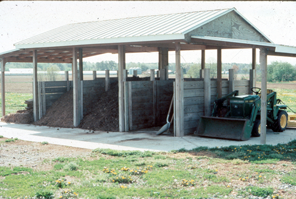

Animal Mortality Facility
What is it?
Animal mortality facilities are constructed for the disposal of livestock and poultry carcasses to prevent excessive nutritents from flowing intro streams and wetlands.
 (photo from Washington State University)
Conservation Benefits
- Reduces the amount of nutrients entering streams and wetlands
- Reduces the potential for diseases and pathogens to enter upland, riparian, and stream habitats
What does it include?
Animal mortality facilities can include temporary or permanent containment structures, constructed disposal pits, composting areas, and incineration facilities. Type of facility constructed will depend on size of property, number of livestock, site locations, sanitary needs, and storage duration. Maintenance and routine inspection of these structures is important to prevent contamination of surface water runoff with nutrients or pathogens.
Animal Mortality Facility Links
- Animal mortality facility (Alabama NRCS)
- Animal mortality facility (NRCS)
- Composting dead livestock: a new solution to an old problem (Iowa State University)
- Disposal of animal mortality and byproducts (Oregon State University Extension Service)
Animal Mortality Facility Bibliography
- Keener et al. 2000. Procedures and equations for sizing of structures and windrows for composting animal mortalities. Applied Engineering in Agriculture 16: 681-692.
- Mukhtar et al. 2003. A Low Maintenance Approach to Large Carcass Composting. American Society of Agricultural Engineers (ASAE) Meeting Paper No. 032263. St. Joseph, Mich. ASAE, 2003.
- Sander et al. 2002. Selected methods of animal carcass disposal. Journal of the American Veterinary Medical Association 220: 1003-1004.
- Standord et al. 2000. Composting as a means of disposal of sheep mortalities. Compost Science and Utilization 8: 135-146.
- Wilkinson. 2007. The biosecurity of on-farm mortality composting. Journal of Applied Microbiology 102: 609-618.